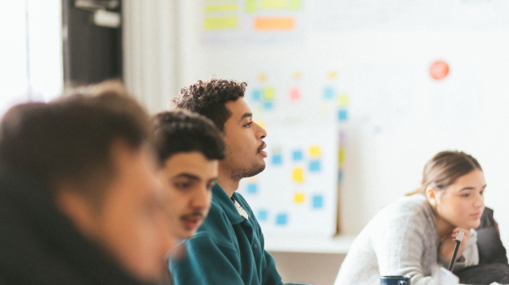
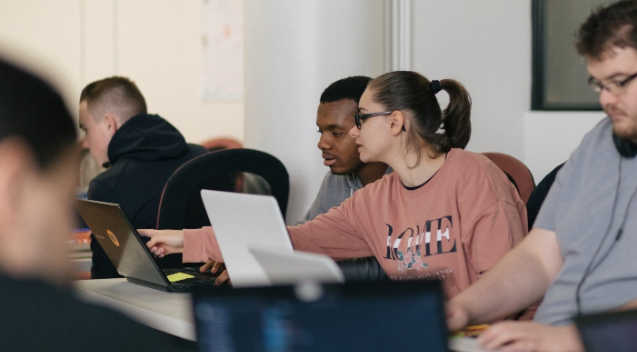
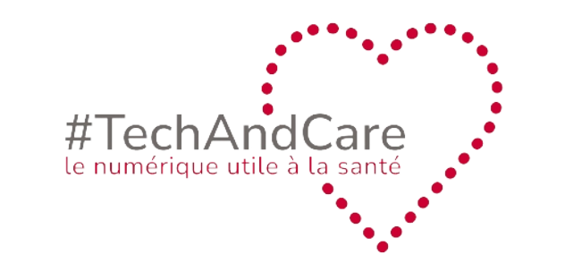
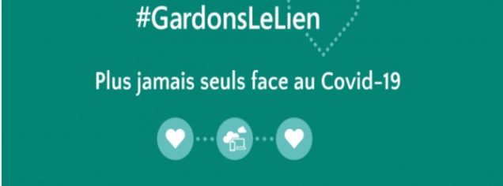
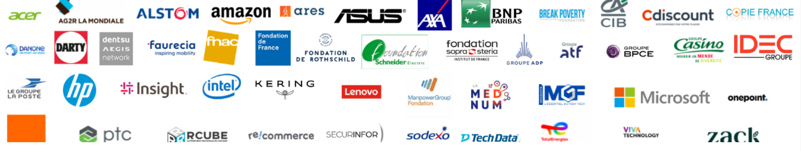
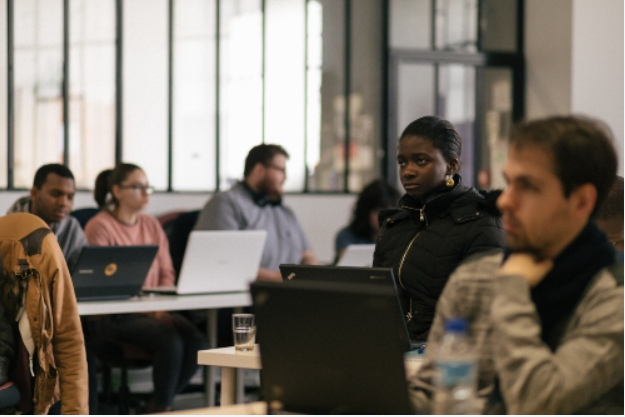
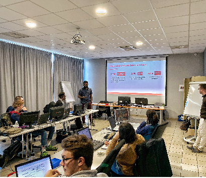

Créées successivement en 2019 et en 2020, le Fonds de dotation Simplon
Foundation, collecteur et redistributeur, et l’association Simplon.asso,
opérateur des actions, agissent de concert pour la cause du numérique
solidaire, inclusif et éco-responsable au service de l'Homme et de la nature,
dans un but non lucratif et d'intérêt général.
L'inclusion au coeur de nos actions
Simplon Foundation et Simplon.Asso partagent avec Simplon.co - Entreprise Solidaire d’Utilité Sociale la conviction qu’informer,
acculturer et former le plus grand nombre et les plus fragiles à l’utilisation des outils numériques
constitue la meilleure réponse face aux effets négatifs d’une société digitalisée.
Notre ambition commune est de décupler les opportunités d’un numérique au service des humains et de la Planète.

Faites un don pour nos programmes
Soutenez nos actions pour, bâtir ensemble un modèle vertueux,
dans lequel la convergence des acteurs publics, privés et associatifs
permet de faire des métiers et des compétences numériques un levier
d'inclusion,de diversité et d'emploi.

Faites un don pour nos bourses d'urgence
Notre programme de Bourses d’urgence vise à soutenir, de manière ponctuelle,
des apprenant.es en situation de précarité extrêmes qui n'ont d'autre choix
que de faire appel à l'aide de Simplon Foundation pour faire face aux difficultés
de vie : logement, mobilité, santé et frais d’alimentation. Ces difficultés sont
des freins majeurs pour leur parcours de formation et d’insertion par l’emploi et
les contraignent à l’abandon de la démarche.En 2019, 52 apprenant.es ont été
bénéficiaires de ces soutiens exceptionnels, d’un montant moyen de 250€.
Faites un don grâce à Bing !
Vous pouvez soutenir Simplon Foundation grâce au moteur de recherche Microsoft Bing.
Rejoignez gratuitement le programme Microsoft Rewards et activez loption Faites un don avec Bing pour soutenir votre association.
Pour cela, rien de plus simple, effectuez vos recherches sur Microsoft Bing avec Microsoft Edge, vos achats ou vos jeux avec Microsoft, pour remporter un maximum de points. Chaque mois, vos points seront automatiquement transformés en don.

techAndCare pour soutenir le numérique utile à la santé !
lappel à projets #TechAndCare, porté par Simplon Foundation et AESIO mutuelle
pour récompenser des innovations numériques au service de la santé inclusive
dans 5 domaines (Bien-vieillir, Santé mentale, Santé des femmes, Santé &
environnement, Accessibilité à la santé numérique) a connu un vif succès.
10 structures finalistes ont été présélectionnées pour venir pitcher leur projet
devant un Jury dexperts au sein duquel ont débattu des acteurs aussi variés que la
lAPHP, la Croix-Rouge française, Simplon, Microsoft, Capgemini, Doctolib et
La Silver Economy.A lissue du concours de pitchs, le Jury a délibéré pour
récompenser 5 projets innovantsavec un impact social fort au service dune santé inclusive.

GardonsLeLien, notre grand projet en engagement collectif
GardonsLeLien, a été rendu possible grâce à lengagement dun véritable collectif : des constructeurs et distributeurs de matériels informatiques, des entreprises sociales et solidaires de reconditionnement, la Fondation de France, des entreprises et fondations dentreprises, et des donateurs particuliers. L'Etat, par le Ministère du Travail et le Haut Commissaire à l'Inclusion dans l'Emploi et à l'Engagement des Entreprises a également contribué financièrement, notamment pour prendre en charge les ordinateurs reconditionnés par les entreprises sociales inclusives mais également par lattribution du label présidentiel : « La France Une Chance, Les Entreprises sengagent » animé par Thibaut Guilluy.
Nos partenaires


Découvrez le programme #NextStepInTech à Montauban
Projet-pilote porté par Simplon Foundation avec le soutien du Fonds dActions Jeunes Nord Midi-Pyrénées
Dispositif gratuit de mobilisation et dorientation vers les emplois du numérique à destination des NEETs : 3 semaines d'accompagnement en groupe, intensif et gratuit pour permettre à 20 jeunes de 18 à 30 ni en études, ni emploi, ni en stage résidant sur le territoire du 82 de trouver un métier lié au numérique fait pour eux et de mettre en action leur parcours de formation. Programme soutenu par le Fonds dActions Jeunes Nord Midi-Pyrénées et co-opéré avec la Compagnie du Code.
Acteur de la (trans)formation numérique, inclusive et solidaire, Simplon.co mène des actions de (re)valorisation des Femmes dans la Tech. Nous visons datteindre la parité en 2020.
Nous travaillons également à déconstruire les stéréotypes de genre.
Soutenu par ses partenaires, Simplon.co oeuvre depuis 2016 pour l‘inclusion socio-professionnelle des personnes étrangères en leur proposant une offre de formation adaptée à leurs besoins : des formations numériques avec des cours de français intensifs.
Handicap et numérique
Soutenu par ses partenaires, Simplon.co oeuvre depuis 2016 pour l‘inclusion socio-professionnelle des personnes étrangères en leur proposant une offre de formation adaptée à leurs besoins : des formations numériques avec des cours de français intensifs.
A travers des ateliers dinitiation au code,
le programme Simplon Kids sensibilise les enfants et les jeunes filles en particulier à la question du genre et de la présence des femmes dans le secteur de la tech.
18-25 ans
Simplon.co accompagne les jeunes de 18 à 25 ans sans emploi, ni formation ou stage en cours dans l'acquisition d’un socle de compétences numériques fondamentales et dans leur projet professionnel.

Médiation numérique
e programme Médiation numérique de Simplon.co, vise à lutter contre lexclusion numérique des personnes éloignées de l'emploi et de la formation.